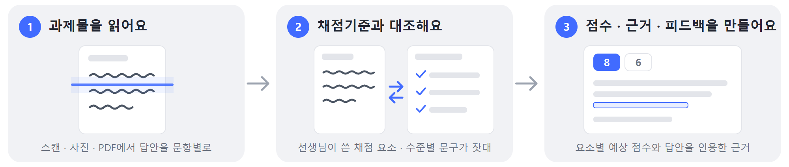
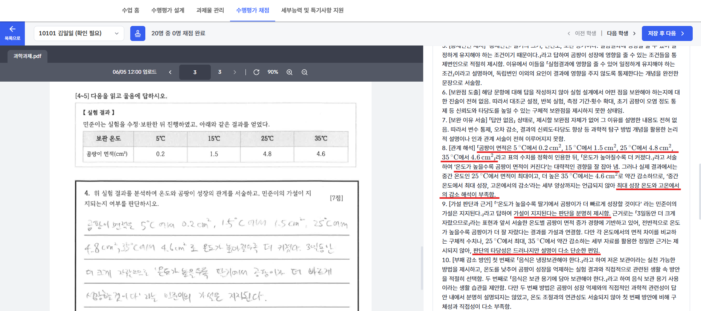

AI는 이렇게 채점해요
AI 채점을 실행하면 일어나는 일과, AI가 점수를 줄 때 보는 것.
세 단계로 진행돼요
AI 채점을 실행하면 학생 한 명마다 아래 세 단계가 한 번에 진행돼요.

| 단계 | 무엇을 하나요 |
|---|---|
| ① 과제물을 읽어요 | 스캔·사진·PDF에서 학생 답안을 문항별로 읽어요. 학생이 클리포에 직접 입력한 답안은 읽는 단계 없이 그대로 써요. |
| ② 채점기준과 대조해요 | 선생님이 평가 설계에 적은 채점 요소와 수준별 문구를 기준으로, 답안을 요소 하나씩 살펴요. |
| ③ 점수·근거·피드백을 만들어요 | 요소별 예상 점수와 함께, 답안의 어느 부분을 보고 그렇게 판단했는지 근거를 적어요. 설정에 따라 학생에게 줄 피드백 초안도 만들어요. |
참고하는 건 두 가지뿐이에요
AI가 참고하는 것은 두 가지뿐이에요. 제출된 과제물, 그리고 선생님이 쓴 채점기준. 기사·본문 원문이나 QR 링크는 열어 보지 않아요. 원문과 비교해야 하는 평가라면 채점기준에 핵심 내용을 직접 적어 주세요.
점수는 제안이에요. 최종 점수는 선생님이 확인하고 저장한 값이에요. AI가 준 점수를 그대로 확정해도 되고, 고쳐서 저장해도 돼요.
실제 화면은 이렇게 생겼어요

AI가 읽은 내용을 확인하고 고칠 수 있어요
🔎
채점이 끝난 뒤 학생 채점 상세의 인식 결과 탭에서 AI가 답안을 어떻게 읽었는지 원본과 나란히 볼 수 있어요. 잘못 읽힌 문항만 고쳐서 다시 채점하면 돼요. 자세한 방법은 5장에 있어요.